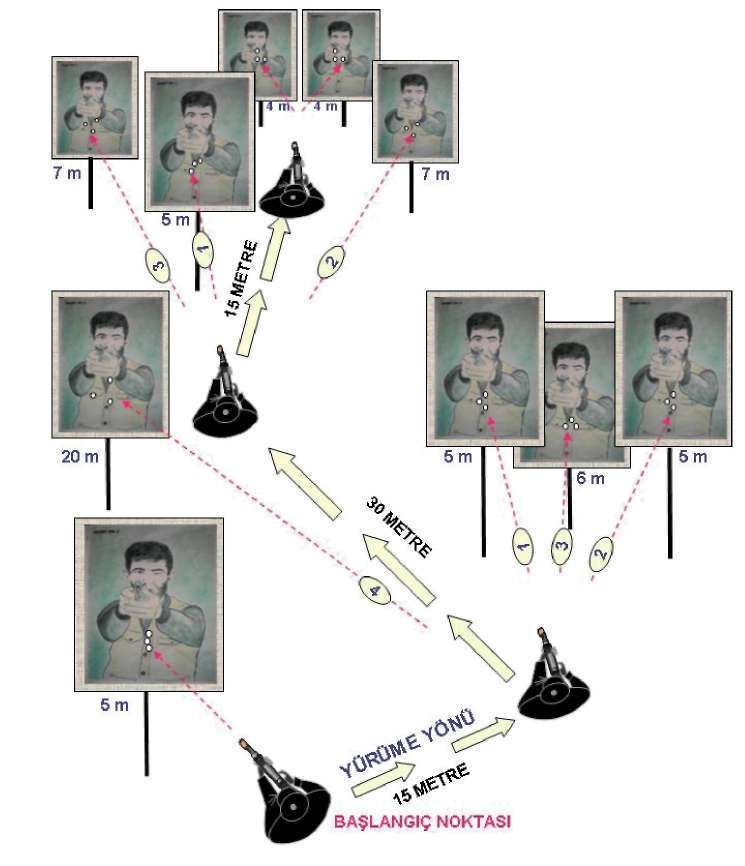
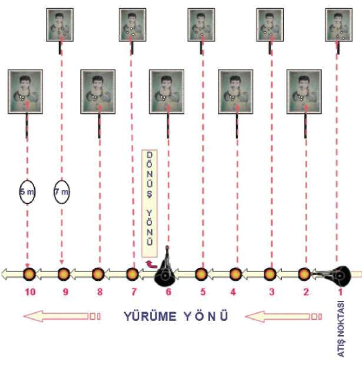
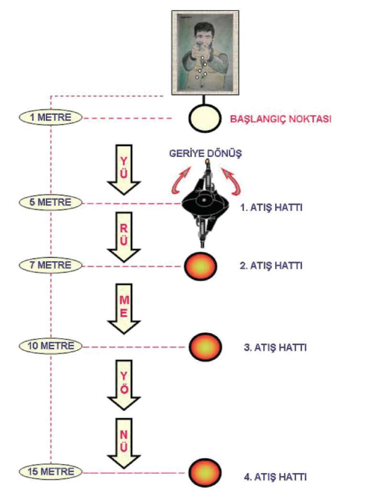
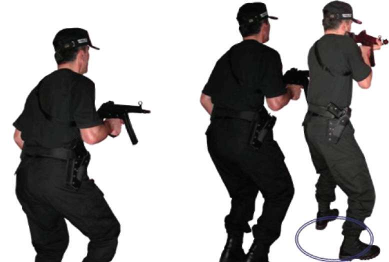
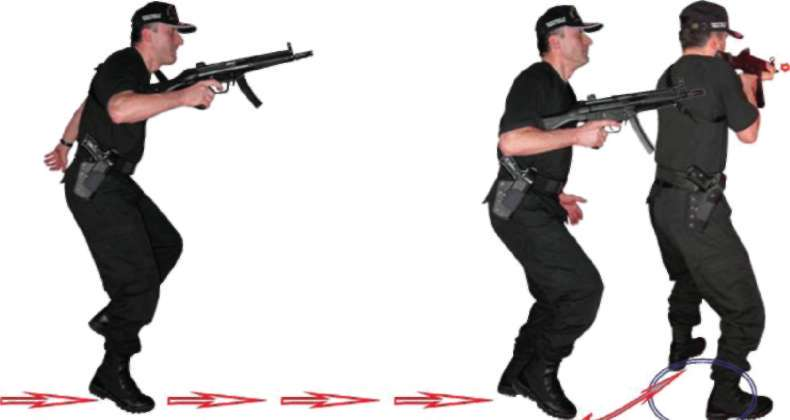
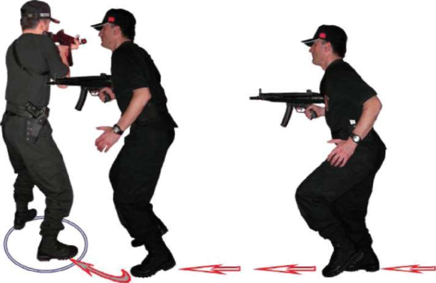
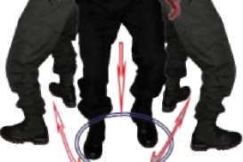
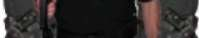
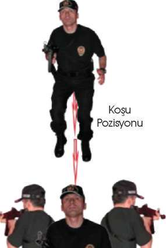

Bu teknik,
^ MP5 makinalı tabanca ile yürürken önden ve değişik yönlerden çıkan hedeflere aniden durarak dönüp atış yapabilme kabiliyetinin ka-zanılmasını ve refleks hâline getirilmesini sağlar 118



BÖLÜM
İLERİ SEVİYE ATIŞ TEKNİKLERİ
Şekil-13.a) Yürürken Önden Çıkan Hedeflere Doğru Durarak Atış İstasyonu 119


Şekil-.13.b) Yürürken Sağdan Çıkan Hedeflere Doğru Durarak Atış İstasyonu Şekil-13.c) MP5 Makinalı Tabanca ile Yürürken Durup Sol Yöne Atış İstasyonu 120



BÖLÜM
İLERİ SEVİYE ATIŞ TEKNİKLERİ
Şekil-13.d) MP5 Makinalı Tabanca ile Yürürken Durup Sol Yöne Atış İstasyonu 121


2.5. MP5 MAKİNALI TABANCA İLE KOŞARKEN DURUP DEĞİŞİK
YÖNLERDEN ÇIKAN HEDEFLERE DOĞRU ATIŞ TEKNİKLERİ
2.5.1. Koşarken Önden Çıkan Hedeflere Doğru Durarak Atış Tekniği MP5 Makinalı tabanca ile koşarken, tek elinizle silahı kabzadan kavrayıp yere paralel, namlu ön tarafı gösterecek şekilde, hareket alanı kolun doğal ileri geri hareketinin içinde olmalıdır. Bu pozisyonda koşarken ön taraftan çıkan ani bir hedefe karşı duruşunuzu önce step yaparak tamamlayın. Eş zamanlı olarak silahınız boşsa doldurun, dolu ise direkt hızlı atış pozisyonuna geçerek hedeflerinize atış yapın. Tekrar koşmanıza devam edin. (Bakınız Resim-16.a) Atış
Step
Pozisyonu
Pozisyonu
Koşu
Pozisyonu
Resim-16.a) Koşarken Önden Çıkan Hedeflere Doğru Durarak Atış Tekniği 2.5.2. Koşarken Sağdan Çıkan Hedeflere Doğru Durarak Atış
Tekniği
Önce duruşunuzu step yaparak tamamlayın. Eş zamanlı olarak silahınız boşsa doldurun, dolu ise direkt sağa dönüş tekniğini uygulayarak hedeflerinize atış yapın ve koşmaya devam edin. (Bakınız Resim-16.b) 122



BÖLÜM
İLERİ SEVİYE ATIŞ TEKNİKLERİ
Atış Step
Koşu
Pozisyonu Pozisyonu
Pozisyonu
Resim-16.b) Koşarken Sağdan Çıkan Hedeflere Doğru Durarak Atış
2.5.3. Koşarken Soldan Çıkan Hedeflere Doğru Durarak Atış Tekniği Önce duruşunuzu step yaparak tamamlayın. Eş zamanlı olarak silahınız boşsa doldurun, dolu ise direkt sola dönüş tekniğini uygulayarak hedeflerinize atış yapın ve koşmaya devam edin. (Bakınız Resim-16.c) Koşu
Step
Pozisyonu
Pozisyonu
Atış Pozisyonu
Resim-16.c) Koşarken Soldan Çıkan Hedeflere Doğru Durarak Atış Tekniği 123



2.5.4. Koşarken Geriden Çıkan Hedeflere Doğru Durarak Atış Tekniği Önce duruşunuzu step yaparak tamamlayın. Eş zamanlı olarak silahınız boşsa doldurun, dolu ise direkt geriye dönüş tekniğini uygulayarak heddefleri-nize atış yapın ve koşmaya devam edin. (Bakınız Resim-16.d) Atış
Atış
Pozisyonu
Pozisyonu
Step ve Sağa Sola
Dönüş Pozisyonu
Resim-16.d) Koşarken Geriden Çıkan Hedeflere Doğru Durarak Atış Tekniği Tekniği Uygulamalı Olarak Çalışma Şekli
^ Emniyet tedbirlerini okuyun. Atış poligonuyla ilgili gerekli önlemleri alın.
^ Vücudunuzu basit ısınma teknikleri ile ısındırın. Çalışmaya hazırlayın.
MP5 makinalı tabancayı ve şarjörleri kontrol edip koruyucu malzemeleri giyin ve giydirin.
^ Tekniklerin hepsini, atışlı çalışmadan önce yetirince kuru çalışın.
^ Bu tekniklerin hepsini, mevcut olan istasyonda atışlı çalışırken teker teker çalışın.
^ Poligonunuza normal bir boy hedefi yerleştirin.
^ Tek şarjörünüzü tam kapasite doldurup elinizdeki silaha takarak normal dolduruş yapın. Silahınızın emniyet mandalını tek tek atış konu-124


BÖLÜM
İLERİ SEVİYE ATIŞ TEKNİKLERİ
muna getirin. Hedefinizin karşısında yaklaşık 30 metre mesafede koş
komutunu bekleyin.
^ Verilen koş komutuyla silah tek elinizde, namlu hedefi gösterecek bi
çimde yere paralel durumdayken koşun ve yaklaşık 20-15-10-5 metre mesafelerden verilecek atış komutuyla beraber step yaparak durup hedefe atış yaptıktan sonra tekrar hedefe doğru koşmaya devam edin. Bu tekniği hedefe 5 metre kalana kadar devam ettirin.
^ Aynı tekniği hedefinize 2 metre mesafeden sırtınızı dönüp koşarken yaklaşık 5-10-15-20 metre mesafelerden verilen atış komutuyla beraber step yapıp durarak hedefe sağdan veya soldan dönüp atış yapın.
Sonra geriye dönüp koşmanıza devam edin. Bu tekniği yaklaşık 20 metre mesafeye kadar devam ettirin.
^ Boy hedeflerinizi koşu yolunuza paralel 5-7 metre mesafe oluşturacak şekilde yerleştirin. Hedefleri sağ paralelinize alarak tek şarjörünüzü tam kapasite doldurup elinizdeki silaha takın ve normal doldurup emniyet mandalını tek tek atış konumuna getirin ve İlk hedefin paralelinde koş
komutunu bekleyin.
^ Verilen koş komutuyla hedeflerinize paralel koşarken verilen her atış
komutuyla beraber step yapıp durun ve hedefinize dönüp atış yapın tekrar son hedefe atış yapana kadar koşunuza devam edin.
^ Aynı tekniği hedeflere paralel ters yönden koşarak sol yöndeki hedeflere doğru atış yapın.
^ Atışlarınızın boy hedefinin göğüs bölgesinde toplaması başarılı olduğunuzu gösterir.
^ Mühimmatın durumuna göre teknikleri tekrar edin.
^ Tamamlanan her çalışmadan sonra şarjörü çıkartıp MP5 makinalı tabancanın fişek yatağını gözle kontrol edin. Güvenli bir bölgede tetik dü
şürerek mekanizmayı tekrar kurulu pozisyona getirin ve silahı emniyete alın. (Bakınız Şekil-14.a, 14.b, 14.c, 14.d)